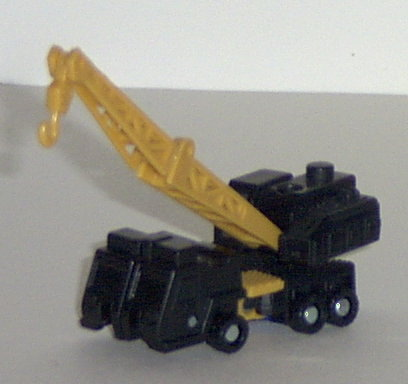
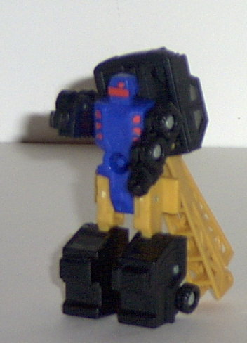
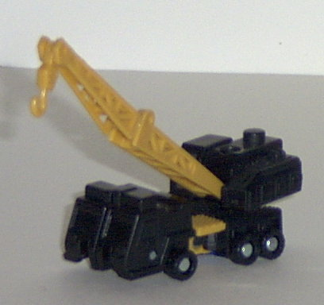
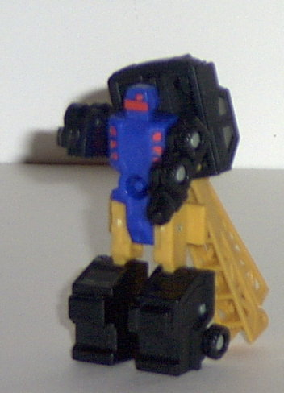
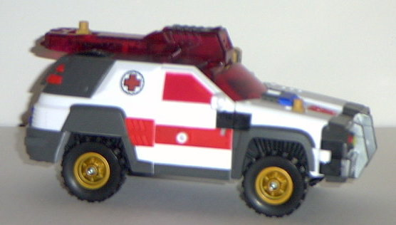
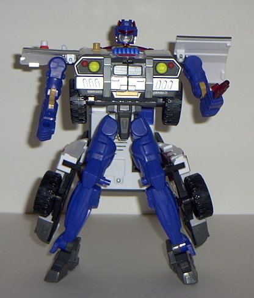
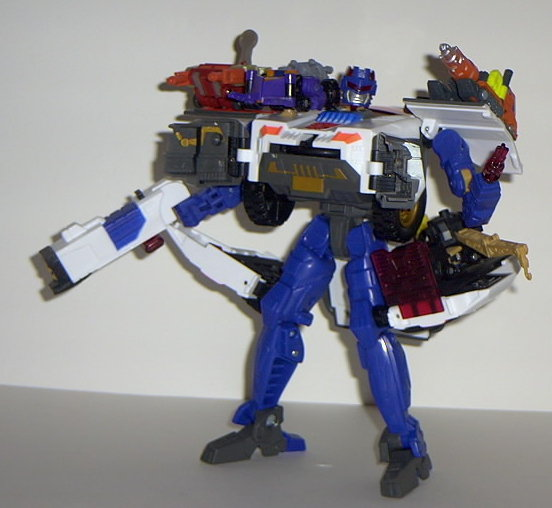

Longarm
Longarm
 
Allegiance : Minicon
Size : Mini-Con
Difficulty of Transformation : Very Easy
Color Scheme : Black, dark blue, light orangish tan, and some silver and light red
Rating : 5.1
Longarm


Allegiance
: Minicon
Size
: Mini-Con
Difficulty of Transformation
: Very
Easy
Color Scheme
: Black, dark blue,
light orangish tan, and some silver and light red
Rating
: 5.1
Vehicle mode is a crane.
This mode is a bit nice, but it could REALLY use some paint detailing.
I mean, not even all of the windows are painted- just the back ones. The
front ones have no paint on them whatsoever. And the robot head also sticks
out rather blatantly from the backside if you look at it at a side or back
angle. Other than that, this is a pretty good mode, with excellent mold
detailing, and a crane arm articulated in three places (the start of the
crane, the middle, and the hook). The back crane "turret" can also swivel
by itself as well. The only downside to this is that the crane arm is rather
fragile, and I could easily see it snapping in two without much pressure
applied to it. Worthy of note is that the vehicle has a siren molded to
it near the front, which is a nice touch, given his Autobot partner. (Although
you can barely make the thing out because of no paint detailing...) The
Minicon port is on the underside of the vehicle mode, slightly more to
the back than the center point.
Robot mode is nothing
to brag about. Although the mold detailing is alright, and the paint detailing
is certainly better than it was in the vehicle mode (although the legs
could use some...), Longarm has two major problems that are a burden in
this mode. For one, the crane arm backpack. It gets in the way too much,
and just looks weird, all folded up behind him like that. Secondly, Longarm
doesn't have much articulation compared to other Minicons. His arms can
move at the shoulders, and his legs can move forward at the hips. That's
it. Well, I suppose you could count the knees, but they're on a hinge that
doesn't lock in place unless it's either vehicle mode position or straight-down
robot mode position. So the lower leg just sorta hangs there and looks
goofy if you try to get Longarm to kneel or something. And the lower legs
are ENTIRELY too large compared to the skinny upper legs. However, the
face looks good, and um.. yeah. The Minicon emblem is molded on Longarm's
chest.
Longarm is definitely
one of the worst partner Minicons of Armada. With a vehicle mode with a
blatant robot extra and lack of good paint detailing, and with an unarticulated
and backpacky robot mode, the word that comes to mind when I look at him
is "eh...". Very mediocre.
 Red
Alert
Red
Alert



Allegiance
: Autobot
Size
: Max-Con
Difficulty of Transformation
: Easy
Color Scheme
: White, dark flat gray,
transparent dark red, flat red, black, dark blue, dull goldish tan, and
some light orangish tan, dark flat red, silver, neon orange, and flat yellow
Powerlinx ports
: 5 (2 gimmicked)
Rating
: 7.9
Vehicle mode is an emergency
SUV, and is pretty darn cool. There's plenty of paint detailing to go around,
although the mold detailing is a little lacking. Some of the paint detailing
includes a nifty red cross symbol on both sides of the vehicle, with some
nice red detailing on the sides and front (although the paint on the Autobot
symbol on the hood is sloppy), the wheels, and the front headlights. The
only mold detailing bits really worthy of note, though, are the aforementioned
headlights and the suspension springs molded in behind the wheels. One
thing that is odd about the paint detailing, though, is the flat red paint
used on the side windows but the clear transparent red plastic used for
the front window, letting you see some of the robot parts. Not only does
this look weird, but it also makes it a little more obvious that this sucker's
a robot in disguise- the only other robot parts even partially visible
in this mode are the back of the robot feet on the vehicle rear. Flat red
windows all around would have been better. This toy's one of the sturdiest
of Armada, and that's really saying something. You could throw Red Alert
across the room into a wall, and you'd have to worry about the wall, not
Red Alert. (Not that that's recommended, mind you...) As for Red Alert's
gimmicks in this mode, there's several; first off, attach a Minicon to
the peg on the hood, and the front bumper panels swing back. Push the attached
Minicon forward, and a disk shoots out, accompanied by a firing sound!
Wheeee! Granted, the neon orange coloring is blargh, but still... Next,
if you attach a Minicon to the rear Powerlinx peg and push back, the right
half of the vehicle roof SWINGS forward accompanied by a firing sound and
lights, revealing a BIG ol' gun starin' any Decepticons straight in the
face, as if to say, "Make a move, punk, I dare ya!" KICKIN! And it's rather
well-hidden, too. Push the button on the top of the gun to fire the actual
missile, which is a two-pronged claw. If you push forward on the same Minicon
port, lights come on and Red Alert says, "RED ALERT, WOOWOOWOOWOO!" Yes,
it actually sounds like some guy saying "WOOWOOWOOWOO", not an actual siren.
Okay, so this gimmick is kinda lame, and sounds doofy, too. Oh, well. There
are also two static Powerlinx pegs on the side doors for more Minicon attachin'.
Red Alert's robot mode,
as least visually, is not that spectacular. My major beef with this mode
is that his proportions are waaay off. His arms are puny when compared
to the rest of his body, as is his head, and his chest is HUGE. Makes a
Spychanger's look teensy in comparison (well, okay, so it is, but I mean
proportionally). His legs are also rather thick and long proportionally,
as well. My other main beef with him is that his leg panels and back panel
really get in the way a ton in this mode, really restricting the leg movement
a lot. Granted, you can turn the leg panels around, but then it looks kinda
weird. Said leg panels are used for two different things; the left one
has another Minicon peg and a flip-up panel, sorta like a mini Med-bay
for minis. Although having a Medbay on the side of your leg IS kinda weird...
The right one has two different attachments that you can put into Red Alert's
hole of a left hand. One is a welder, and the other attachment is a gun.
Or you can stick one in his right fist hole if you wanna. Nifty. All of
Red Alert's vehicle mode gimmicks work in this mode as well, although you
can also take off the deployed vehicle mode gun and he can hold it in his
hand in robot mode. Coolies. As for articulation, Red Alert has it in his
feet (only forwards, though), his heels, his knees, his hips, his shoulders
(in three places), his head, and his elbows (in two places). Pretty good
for a larger Armada toy, I'd say. However, as said before, the leg and
back panels restrict quite a bit of the leg movement. Red Alert's mold
detailing is also better on the robot parts than it was in vehicle mode,
with mech and wire and tube detailing all over the place.
Red Alert has a kickin'
vehicle mode and really cool gimmicks. However, his robot mode suffers
from the gimmicks quite a bit with its odd proportions and restricted leg
movement. So, if you like gimmicks over looks and articulation, then get
'im. Otherwise, pass.
Review by Beastbot